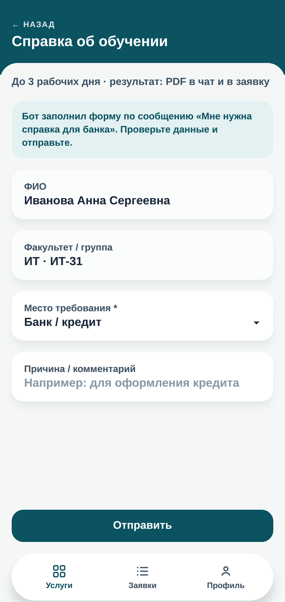
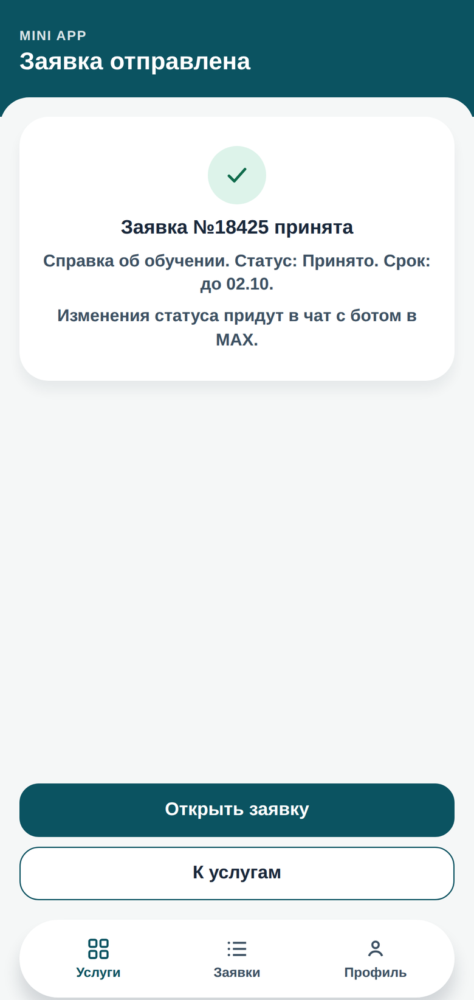
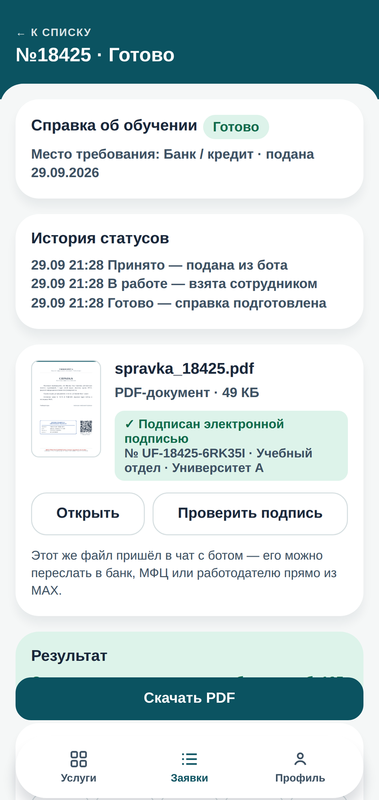
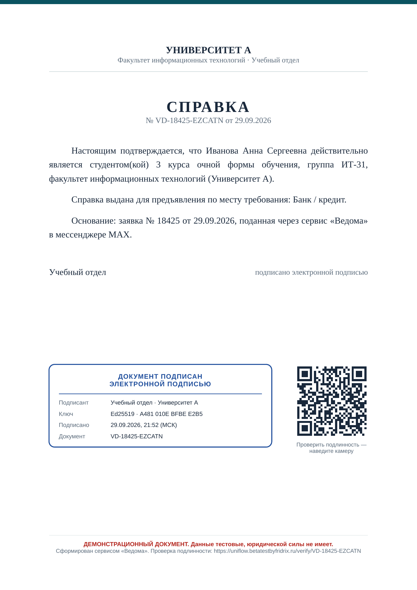
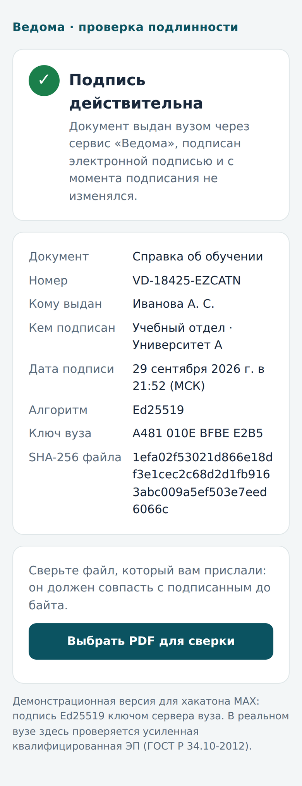
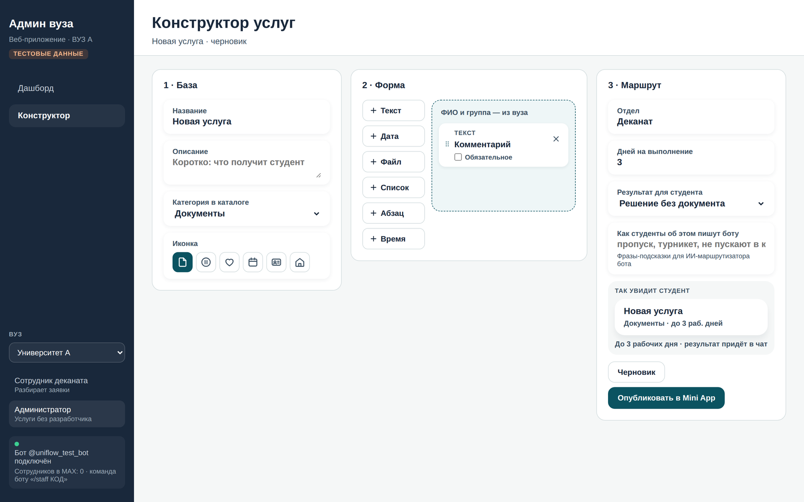
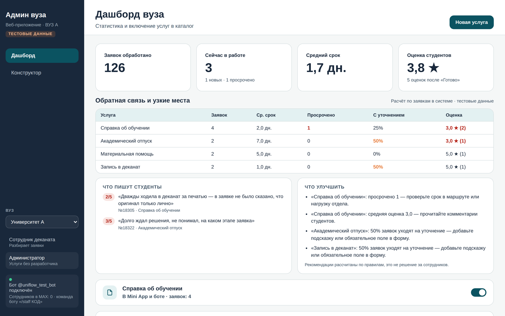

Студент в MAX: кнопка «Демо-вход: тестовый студент» в боте
Студент в Mini App: a.ivanova@student.univ-a.ru, любой пароль от 4 символов
Сотрудник в MAX: боту /staff
Переменные для Docker
BOT_TOKEN=
JEV_API_KEY=
JEV_API_URL=https://polza.ai/api/v1/systemone
JEV_MODEL=typesafe/jev остальное — в .env.example; запуск: docker compose up -d --build
Сценарий: боту «Нужна справка» → «Банк / кредит» → «Оформить» → «Отправить» в Mini App → в панели «Взять в работу» → «Сформировать по шаблону» → «Готово» → в MAX приходит PDF с ЭП и кнопка «Проверить подпись»
1
Хакатон MAX · трек «Образовательные решения»
Ведома
Единое окно студенческих услуг в MAX
Студент пишет боту своими словами, вуз обрабатывает заявку в одной панели, документ приходит в чат
Команда «Пантеры»
СПбГУПТД — Санкт-Петербургский государственный университет промышленных технологий и дизайна
Ульяна Уланова
UX/UI-дизайнер
Олег Чыпсымаа
Backend
Фёдор Хавалиц
Frontend · тимлид
Данил Ключников
Product-менеджер
2
Коротко о проекте
Ведома переводит услуги вуза в MAX: студент пишет своими словами — вуз отвечает документом в чат
Продукт
Бот, Mini App и панель вуза
Справки, заявления, запись, соцподдержка — в одном чате. Статус и PDF с электронной подписью приходят туда же.
Технология
Нейросеть Jev вместо анкет
Модель принятия решений нового класса, не LLM. За полсекунды понимает запрос и заполняет форму.
Модель
SaaS с конструктором услуг
Вуз собирает свои услуги сам, как сайт в Тильде. Типовые документы выдаются по шаблону — без очереди.
Уже работает: бот MAX с нейросетью Jev · Mini App · панель деканата · PDF с ЭП · оценки и аналитика · конструктор услуг · несколько вузов на одной платформе
3
Для кого
Приоритетный сегмент — студент очной формы, которому нужна типовая услуга вуза: справка, заявление, запись к специалисту
Студент 18–23 лет, бакалавриат или специалитет
Справка нужна «на вчера» — для банка, военкомата, МФЦ, визы, работы родителей12. Приёмные часы совпадают с парами.
Почему начинаем с него
Запросы частые и однотипные, результат понятен — документ или ответ. Эффект виден уже в первом семестре.
Ведома — единое окно студенческих услуг внутри MAX: три части, связанные в один процесс
01
Бот с ИИ
Нейросеть Jev понимает запрос своими словами, бот уточняет недостающее кнопками и присылает готовый документ.
02
Mini App
Каталог услуг, форма уже заполнена ботом и данными вуза, мои заявки, документы, оценка услуги.
03
Панель вуза
Конструктор услуг, документы по шаблону с подписью, очередь для нетиповых заявок, аналитика.
Заявка из бота сразу попадает в панель вуза, а каждый шаг — статус, документ, вопрос — приходит студенту сообщением в MAX.
7
Путь студента
На примере справки об обучении — от сообщения до документа, без визитов и писем
В
Ведомабот вуза
Нужна справка
Похоже, вам нужна справка об обучении. Куда нужна справка?
Банк / кредитВоенкоматСоцзащита / МФЦПосольство / визаРабота родителейДругое
Отлично, заявка «Справка об обучении» почти готова. Место требования: Банк / кредит
ОформитьЭто другая услуга
1. Пишет боту. Jev понял, бот уточнил

2. Mini App. Форма уже заполнена

3. Заявка принята. Срок виден сразу
В
Ведомабот вуза
Заявка №18425 принята. Срок: до 02.10.
Заявка №18425: статус «В работе».
Заявка №18425 готова. Документ подписан электронной подписью вуза.
PDF
spravka_18425.pdf49 КБ
Проверить подпись
Оцените, как прошло оформление
12345
4. Статусы и PDF приходят в чат

5. Документ с ЭП — пересылает в банк
Экраны Mini App — из работающего MVP; диалог с ботом показан схематично; данные тестовые8
Нейросеть Jev
Jev (TypeSafe AI) — модель принятия решений класса System One. Не пишет текст, как LLM, а выбирает ответ и даёт его вероятность15
LLM (ChatGPT, GigaChat…)
Jev
Что делает
пишет текст слово за словом
выбирает из вариантов, которые задал вуз
Ответ
свободный текст — может выдумать
вариант и вероятность каждого
Контроль
ответ каждый раз разный
порог уверенности: действовать или переспросить
Для бота вуза
нужен отдельный контроль ответов
ответ сразу превращается в действие
20–200раз
быстрее сопоставимых LLM: ответ за 70–500 мс
40–400раз
дешевле сопоставимых LLM
Данные разработчика15. Наш замер — на следующем слайде
15 — TypeSafe AI: Jev — первая модель класса System One · 16 — Polza.AI: «модель другого класса, чем чат-модели»9
Что понимает Jev
Студент не знает, как называется услуга. Jev понимает смысл и заполняет форму за него
Студент пишет
Что понял Jev
По ключевым словам
«Надо подтвердить, что я учусь, для визы»
Справка об обучении место: посольство / виза
не понял
«Не хватает денег на еду, в семье пятеро детей»
Материальная помощь основание: многодетная семья
не понял
«Заболел, хочу взять паузу в учёбе»
Академический отпуск основание: по медицинским показаниям
без основания
«Хочу к декану»
Запись в деканат время уточнит кнопками
не понял
4из 4
запроса понял Jev; по ключевым словам — ни одного полностью
0,5–0,7с
на одно сообщение
0,04₽
стоимость разбора одного сообщения
Наш замер на работающем MVP: Jev через Polza.AI, каталог тестового вуза, 29.09.202610
Как Jev принимает решение
Каждый ответ — с вероятностью. Бот действует сам, только когда модель уверена, иначе переспрашивает
Студент пишет
Привет, нужна справка для банка
→
Jev · один запрос · 0,64 с
Что хочет
оформить услугу
100%
Какая услуга
справка об обучении
100%
Куда
банк / кредит
90%
→
Бот
Всё выше порога — черновик заявки готов. Студенту остаётся нажать «Оформить».
Уверен
Вероятность выше 60% — поле заполнено, услуга выбрана.
Сомневается
«Нужна справка» — спросит кнопками, куда. Несколько похожих услуг — предложит выбрать.
Не про услуги
Поздоровается, покажет статусы заявок или подскажет, с чем может помочь.
Реальный ответ Jev на работающем MVP, 29.09.2026: 0,64 с, 0,042 ₽ · порог 60% — настройка Ведомы11
Документ с подписью
Продолжение той же заявки: справка для банка приходит в чат PDF-файлом с электронной подписью и QR-кодом

1
Шаблон вуза заполняется самФИО, курс, группа — из данных вуза; «банк / кредит» — из ответа Jev
2
Сервер подписывает файлШтамп подписи и QR-код внутри PDF, номер — в реестре
3
Файл приходит студенту в MAXЕго можно сразу переслать в банк
4
Банк сканирует QR«Подпись действительна». Изменённый файл проверку не пройдёт
В MVP — криптоподпись Ed25519 ключом сервера вуза с пометкой «демо». В вузе — УКЭП (ГОСТ Р 34.10-2012), остальное без изменений.

Экраны из работающего MVP · документ демонстрационный12
Автоматизация
Большинство обращений типовые. Вуз один раз настраивает процесс — дальше он идёт сам, а сотрудник нужен только для решений
Автоматически
Справку запросил — справку получил
Справки об обучении, о стипендии, для военкомата, выписки. Данные уже есть у вуза: шаблон → подпись → в чат за секунды.
Шаблон и подпись уже работают, автозапуск — следующий релиз
Один клик
Документ собран, сотрудник проверяет
Текст готов по шаблону, сотрудник смотрит и нажимает «Готово». Переходный режим для вуза, который хочет контроль.
● Работает в MVP
Решает сотрудник
Только там, где нужна оценка человека
Матпомощь, академический отпуск, перевод: проверить основания и документы. Очередь со сроками, уведомления в MAX.
● Работает в MVP
Почему не всё автоматически? Справка лишь подтверждает данные из базы вуза — её можно выдавать без человека. Выплата или отпуск — решение с последствиями: его принимает сотрудник, а Ведома готовит заявку.
Режим выбирается для каждой услуги отдельно13
Конструктор услуг
Как Тильда для сайтов — только для услуг вуза. Новая услуга появляется в боте и Mini App без программиста

Собрать услугу из блоков
Поля, срок, отдел, результат, фразы для Jev → «Опубликовать». Jev узнаёт услугу сразу, без обучения.

Увидеть, где процесс буксует
Оценки и комментарии по каждой услуге, сроки и просрочки — и подсказки, что перенастроить.
Экраны из работающего MVP · данные тестовые14
Архитектура
Один сервер связывает MAX, нейросеть Jev и панель вуза. Что куда уходит:
Любая типовая услуга собирается в конструкторе. Справка — лишь первый пример
Документы
справка об обучении ● MVP
справка для военкомата
о стипендии и доходах
выписка оценок
Учёба
академический отпуск ● MVP
запись в деканат ● MVP
пересдача и перезачёт
перевод и восстановление
Соцподдержка
материальная помощь ● MVP
повышенная стипендия
компенсации и льготы
Кампус
общежитие ● MVP
пропуск в кампус
заявка на ремонт
бронь аудитории
Механика одна: студент пишет → Jev находит услугу → форма уже заполнена → типовое выдаётся по шаблону, остальное решает сотрудник → ответ в MAX. Меняется только каталог.
● MVP — услуга уже есть в тестовых вузах демо-стенда19
Масштабирование
Та же механика работает везде, где организация выдаёт документы по запросу
751
вуз — первая аудитория3
3,2тыс.
колледжей, ≈4 млн студентов — те же справки4
25
вузов в одной платформе — так уже работает «Кампус» в регионе13
TypeSafe AI — Jev, первая модель класса System One: документация; заявлено в 20–200 раз быстрее и в 40–400 раз дешевле сопоставимых LLM, ответ 70–500 мс (данные разработчика)
Polza.AI — страница модели Jev: модель принятия решений с вероятностями ответов
Замеры ИИ, проверки API и экраны — собственные, на работающем MVP, 29.09.202622
Ведома · команда «Пантеры» · СПбГУПТД
Единое окно студенческих услуг — для любого вуза в MAX